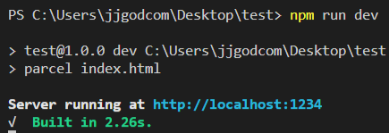

Node.js
Node.js는 Chrome V8 JavaScript 엔진으로 빌드된 JavaScript 런타임(프로그래밍 언어가 동작하는 환경)
NVM 설치
- NVM-windows 접속
- Download Now 클릭
- nvm-setup.zip 파일 다운로드
- 다운로드 완료후 터미널에서 nvm —version 입력후 버전확인
NVM 사용법
# 도움말
nvm --help
# 버전 확인
nvm ls
# node.js 12.14.1 버전 설치
nvm install 12.14.1
nvm install 12.21.0
# 버전 삭제
nvm uninstall 12.21.0
# 사용할 버전 선택
# 에러가 날경우 path경로 띄어쓰기 없어야함
# 나는 관리자 권한으로 터미널 열어서 하니 use성공함
nvm use 12.14.1
# 설치된 node.js 버전 확인
node --version
NPM
NPM(Node Package Manager)은 전세계의 개발자들이 만든 다양한 기능(패키지, 모듈)들을 관리.
# 입력시 package.json 파일이 생성됨
npm init -y
# parcel-bundler 설치
npm install parcel-bundler -D
# lodash 설치
npm install lodash
개발 서버 실행과 빌드
터미널에서 명령어로 index.html 실행하기
1. package.json 에 해당 명령어 추가
// dev = 개발용
// build 배포용
"scripts": {
"dev": "parcel index.html",
"build": "parcel build index.html"
},
2. 터미널에서 npm run dev 실행후 파란부분 클릭
.gitignore
.cache/
dist/
node_modules/